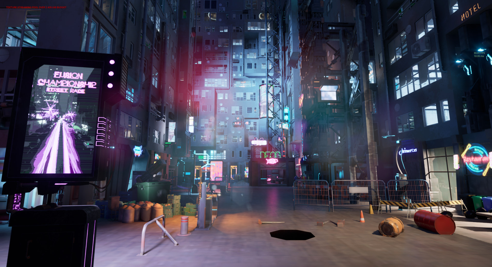
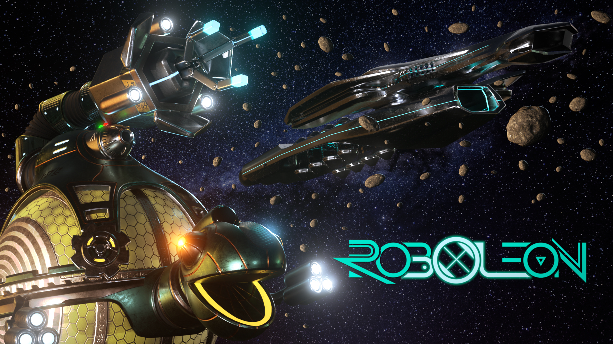
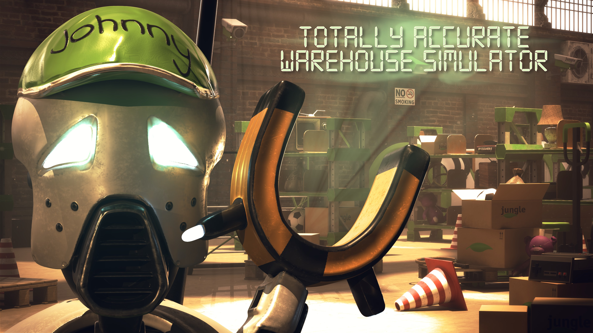
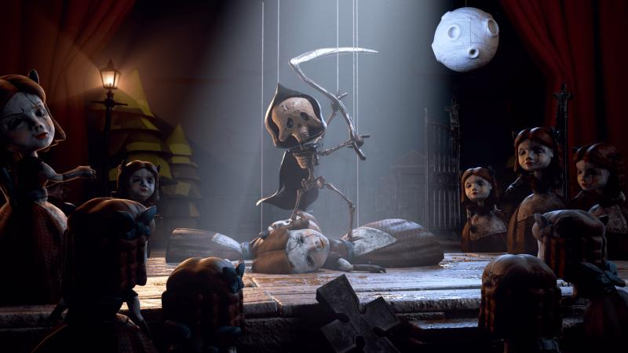

Game Programming
King of Dareux - Duality
Timeframe: 3 months
I worked as contract Gameplay and UI Programmer to fix bugs and implements features on an AA action-adventure RPG based on 4040 post-apocalyptic Earth.
Roboleon
Timeframe: 6 weeks
I co-wrote narrative and programmed gameplay, tools, and UI features for an 3rd-person dark, comedic, narrative puzzle game in Unity's HDRP on a team of 19.
Quipu Game
Timeframe: 5 months (3 Unity + 2 Unreal)
While finishing school, I sought to learn Unreal Engine and solo-developed an action adventure prototype following a Moche diver with telekinetic power, adapted from my original screenplay Quipu.
Totally Accurate Warehouse Simulator
Timeframe: 1 week
I programmed rigid body movement, procedural content, UI, and localization systems for a 3rd-person order delivery game in Unity's HDRP on a team of 19.
The Amazing Puppet Show
Timeframe: 1 week
Programmed pieces of the Enemy AI, Movement, Menu systems in a 3rd-person 2.5D roguelike mini-game that uses simulated puppetry movement on a controller as a primary game loop in Unity's HDRP on a team of 19.

Computer Systems Projects
Cache Simulator
I implemented a program to simulate how a variety of caches perform on a variety of memory traces. I then used this program and the given traces to determine the best overall cache configuration.
Multithreaded Network Calculator
I created calculator that could work through a network connection, using a thread for each client connection. I made a struct type to represent the data associated with a particular client, which includes the client socket file descriptor and a pointer to the shared struct Calc instance. I added synchronization to my implementation so that expression evaluations are atomic.
#include /* for snprintf */
#include
#include
#include
#include "csapp.h"
#include "calc.h"
#define LINEBUF_SIZE 1024
//max number of active threads. Chose 100 as an arbitrary upper value, should be changed later
const int MAX_THREAD_COUNT = 20;
//number of currently active threads
int activeThreads = 0;
struct ChatInfo {
struct Calc *calc;
int clientfd;
};
int chat_with_client(struct Calc *calc, int infd, int outfd) {
rio_t in;
char linebuf[LINEBUF_SIZE];
/* wrap standard input (which is file descriptor 0) */
rio_readinitb(&in, infd);
/*
* Read lines of input, evaluate them as calculator expressions,
* and (if evaluation was successful) print the result of each
* expression. Quit when "quit" command is received.
*/
while (1) {
ssize_t n = rio_readlineb(&in, linebuf, LINEBUF_SIZE);
if (n <= 0) {
/* error or end of input */
return 1;
}
if (strcmp(linebuf, "quit\n") == 0 || strcmp(linebuf, "quit\r\n") == 0) {
/* quit command */
return 1;
}
if (strcmp(linebuf, "shutdown\n") == 0 || strcmp(linebuf, "shutdown\r\n") == 0) {
/* shutdown command */
return 0;
} else {
/* process input line */
int result;
if (calc_eval(calc, linebuf, &result) == 0) {
/* expression couldn't be evaluated */
rio_writen(outfd, "Error\n", 6);
} else {
/* output result */
int len = snprintf(linebuf, LINEBUF_SIZE, "%d\n", result);
if (len < LINEBUF_SIZE) {
rio_writen(outfd, linebuf, len);
}
}
}
}
}
void *thread_chat(void *arg) {
//increment threadsNow
activeThreads++;
struct ChatInfo *info = arg;
pthread_detach(pthread_self());
/* chat with client using standard input and standard output */
int shutdown = !chat_with_client(info->calc, info->clientfd, info->clientfd);
if(shutdown) {
exit(0);
}
else {
close(info->clientfd);
}
free(info);
//decrement threadsNow
activeThreads--;
return NULL;
}
void fatal(const char *msg) {
fprintf(stderr, "%s\n", msg);
exit(1);
}
int create_server_socket(int port) {
struct sockaddr_in serveraddr = {0};
int ssock_fd = socket(AF_INET, SOCK_STREAM, 0);
if (ssock_fd < 0)
fatal("socket failed");
serveraddr.sin_family = AF_INET;
serveraddr.sin_addr.s_addr = htonl(INADDR_ANY);
serveraddr.sin_port = htons((unsigned short)port);
if (bind(ssock_fd, (struct sockaddr *) &serveraddr,
sizeof(serveraddr)) < 0)
fatal("bind failed");
if (listen(ssock_fd, 5) < 0)
fatal("listen failed");
return ssock_fd;
}
int accept_connection(int ssock_fd, struct sockaddr_in *clientaddr) {
unsigned clientlen = sizeof(clientaddr);
int client_fd = accept(ssock_fd, (struct sockaddr *) clientaddr, &clientlen);
if (client_fd < 0)
fatal("accept failed");
return client_fd;
}
int main(int argc, char **argv) {
if (argc != 2) {
fatal("Usage: ./server ");
}
int port = atoi(argv[1]);
int ssock_fd = create_server_socket(port);
struct Calc *calc = calc_create();
while (1) {
struct sockaddr_in clientaddr;
//check that max threads isn't reached and a shutdown command wasn't given
int clientfd = accept_connection(ssock_fd, &clientaddr);
//struct for thread directions
struct ChatInfo *info = malloc(sizeof(struct ChatInfo));
info->calc = calc;
info->clientfd = clientfd;
//create thread to interract with client
pthread_t thr_id;
if(pthread_create(&thr_id, NULL, thread_chat, info) != 0){
fatal("pthread_create failed");
}
}
calc_destroy(calc);
close(ssock_fd);
return 0;
}
/*
* Interactive calculator program
*
*/
#include /* for snprintf */
#include "csapp.h" /* for rio_ functions */
#include "calc.h"
/* buffer size for reading lines of input from user */
#define LINEBUF_SIZE 1024
void chat_with_client(struct Calc *calc, int infd, int outfd);
int main(void) {
struct Calc *calc = calc_create();
/* chat with client using standard input and standard output */
chat_with_client(calc, 0, 1);
calc_destroy(calc);
return 0;
}
void chat_with_client(struct Calc *calc, int infd, int outfd) {
rio_t in;
char linebuf[LINEBUF_SIZE];
/* wrap standard input (which is file descriptor 0) */
rio_readinitb(&in, infd);
/*
* Read lines of input, evaluate them as calculator expressions,
* and (if evaluation was successful) print the result of each
* expression. Quit when "quit" command is received.
*/
int done = 0;
while (!done) {
ssize_t n = rio_readlineb(&in, linebuf, LINEBUF_SIZE);
if (n <= 0) {
/* error or end of input */
done = 1;
} else if (strcmp(linebuf, "quit\n") == 0 || strcmp(linebuf, "quit\r\n") == 0) {
/* quit command */
done = 1;
} else if (strcmp(linebuf, "shutdown\n") == 0 || strcmp(linebuf, "shutdown\r\n") == 0) {
/* shutdown command */
done = 1;
} else {
/* process input line */
int result;
if (calc_eval(calc, linebuf, &result) == 0) {
/* expression couldn't be evaluated */
rio_writen(outfd, "Error\n", 6);
} else {
/* output result */
int len = snprintf(linebuf, LINEBUF_SIZE, "%d\n", result);
if (len < LINEBUF_SIZE) {
rio_writen(outfd, linebuf, len);
}
}
}
}
}
Java
Android Modular Tiles
I designed several games (i.e. memory, physical, social) for combined use with physical modular tiles with touch sensors and colored lights with a team @ Technical University of Denmark.
Logical Belief Revision Engine
I worked to implement a logical belief revision engine that takes in propositions, then revises, and removes them depending on contradictions.